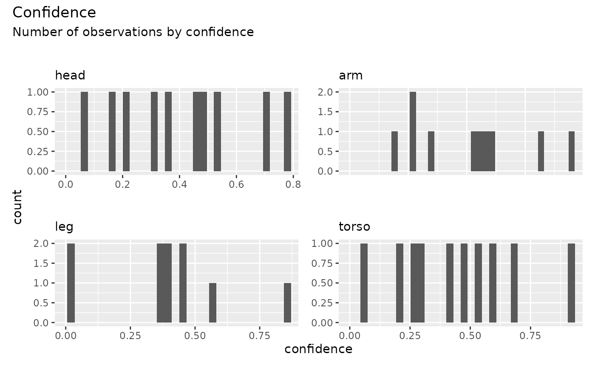

Visualize the distribution of confidence values for each keypoint
Source:R/check_confidence.R
check_confidence.RdThis function generates histograms showing the distribution of confidence values for each keypoint in the dataset.
Value
A patchwork object combining histograms for each keypoint, visualizing
the confidence value distributions.
Details
Each keypoint in the dataset is assigned its own histogram, showing the frequency of different confidence values.
Confidence values are grouped and visualized using the
subplot_confidencefunction.The combined plots use
patchworkfor alignment and styling.
Examples
library(dplyr)
#>
#> Attaching package: ‘dplyr’
#> The following objects are masked from ‘package:stats’:
#>
#> filter, lag
#> The following objects are masked from ‘package:base’:
#>
#> intersect, setdiff, setequal, union
library(patchwork)
data <- dplyr::tibble(
keypoint = rep(c("head", "arm", "leg", "torso"), each = 10),
confidence = runif(40, min = 0, max = 1)
)
# Generate histograms of confidence distributions
check_confidence(data)
